1.具有良好的沟通表达能力，遇事沉着冷静，解决能力强
2.学习能力强，目前学会的编程语言有C，C++，Java，PHP，JavaScript。后续还会继续进行学习和强化
3.对前端编程有自己的一个见解，擅长使用VUE框架
4.具有团队合作精神
5.将编程当做自己的一个兴趣，对前端十分热爱，想有自己的一席之地
1.掌握原生js,HTML/HTML5,CSS/CSS3等前端开发语言
2.掌握html5中的canvas标签的使用
3.熟练使用vscode(主要前端语言,PHP),vs2019(主要C和C++),Eclipse(主要Java),navicat(数据库),phpstudy(解析PHP语言和重定向网站)
4.熟练使用vue框架，了解jQuery框架(之前学会了，但项目中使用的全是VUE框架有些遗忘)
5.可以直接使用原生js来编写网页业务逻辑
6.了解PHP，Java，C，C++，jdbc(D3P0),MYSQL等后端语言和服务器语言
7.会使用ajax，axios来进行网络请求，主要为get，post，反向代理，jsonp的格式的网络请求
8.了解GitHub中的一些常规命令，和一些git命令
9.vue框架掌握一些常见的开发依赖和运行依赖，掌握vue中router,bus,vuex,axios的等一些插件，了解vue的回调函数和生命周期
10.会使用webpack打包(不是很熟练，用来VUE脚手架后没有怎么单独写打包工具)
11.GitHub网址https://github.com/bug-hou
1.一个医疗网站（用来参加华迪杯的一个参赛作品:PC端,目前正在写手机端）
主要技术:vue构建前端框架,vuex,bus,axios,router等
主要功能:对药品的查看，搜索，对医院的查看，登录，注册，定位等一些常见都要实现
大体功能基本实现，有13个一级路由，和7个二级路由
项目代码地址:https://github.com/bug-hou/door可以直接进行查看
该项目的前端，后端(php)，数据库(mysql)都是独立完成
部分项目的截图
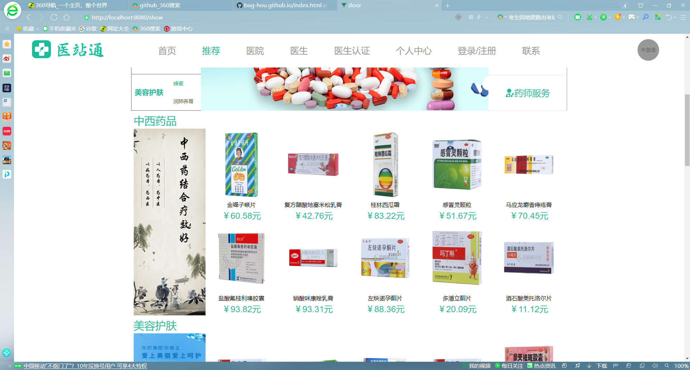 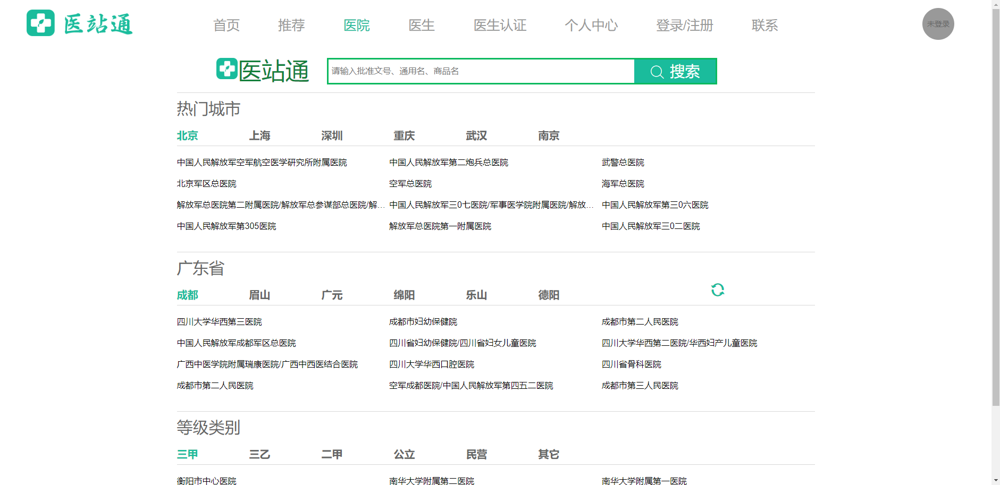 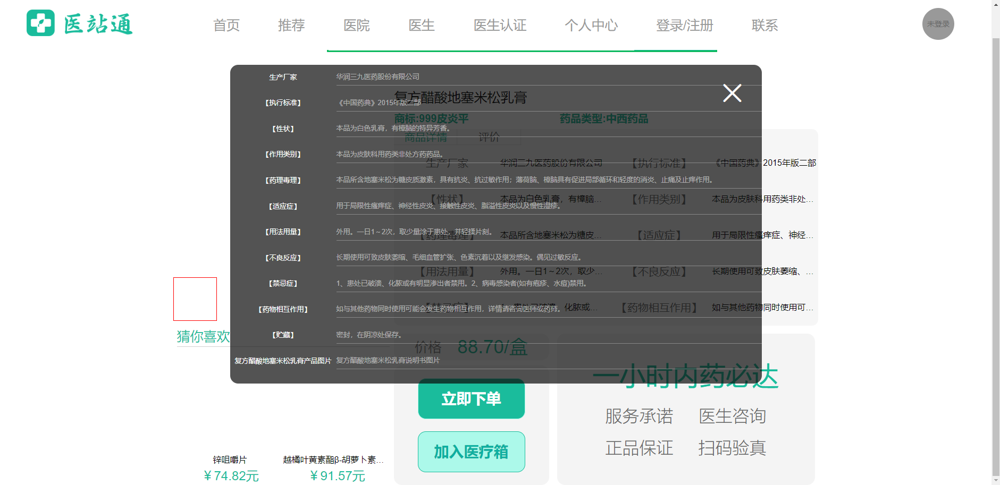 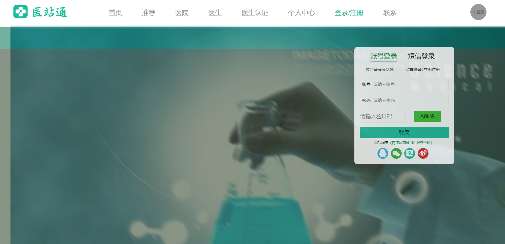2.仿照蘑菇街的一个女装购物(只实现了部分主要页面：手机端)
主要功能:对商品的查看，和详情页的查看，还有购物车的实现(其他页面没有暂时还没有实现)
项目代码地址:https://github.com/bug-hou/supermall可以直接进行查看
3.仿照饿了么的一个外卖（数据没有太多：手机端）
主要技术:vue脚手架构建前端框架,better-scroll,swiper,axios,router等
主要功能:对首页，详情页，评论，登录，购物车等页面(除了数据比较少功能基本实现)
项目代码地址:https://github.com/bug-hou/Beat可以直接进行查看
部分项目的截图
 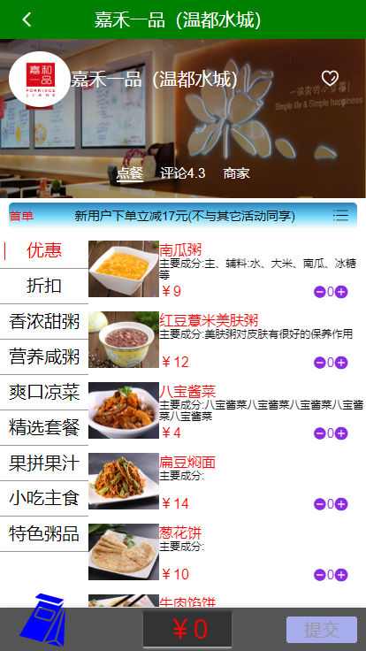
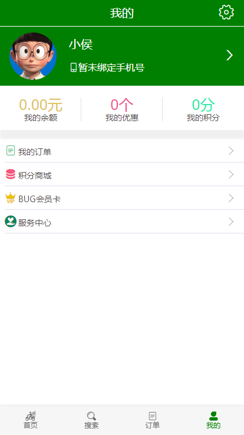
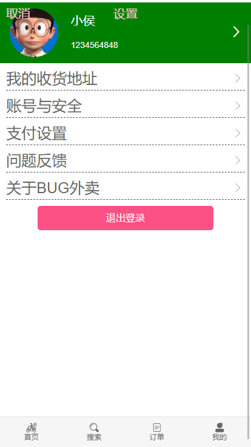
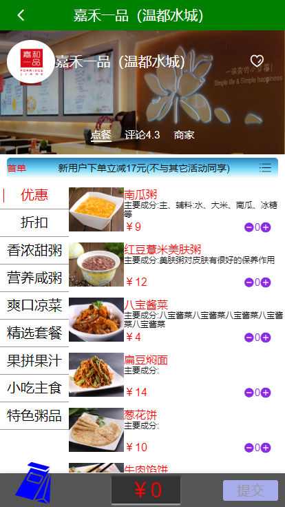
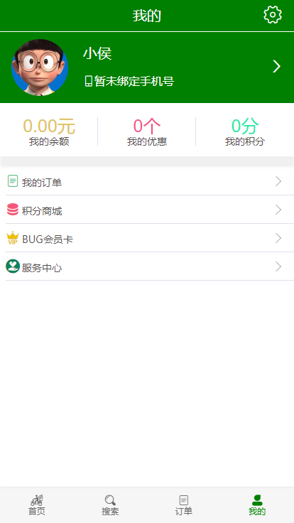
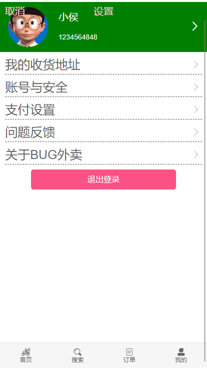
4.电影的后台网页
主要技术:vue脚手架构建前端框架,axios,vuex,bus等
主要功能:电影的上映时间，类型，进行展示，可以直接对电影进行修改，可以进行搜索(页面没有全部完成，只是主体部分)
项目代码地址:https://github.com/bug-hou/movie可以直接进行查看
部分项目的截图
 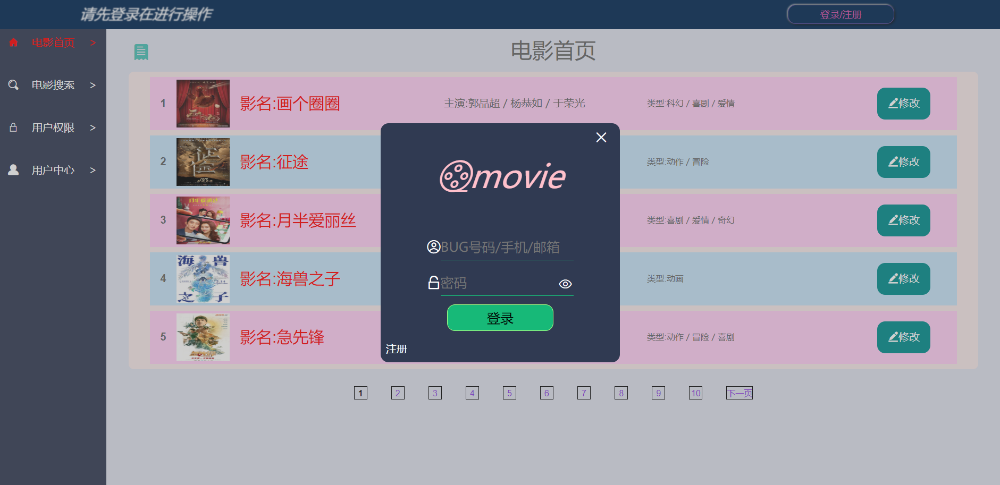
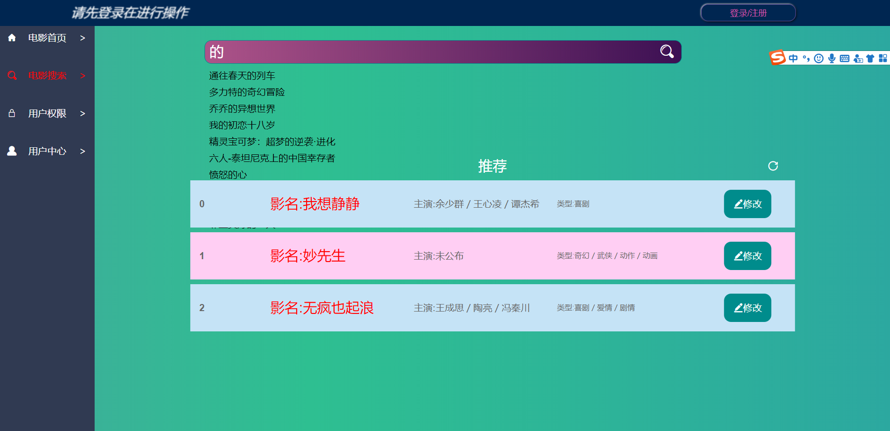
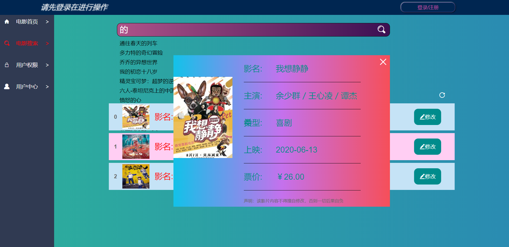
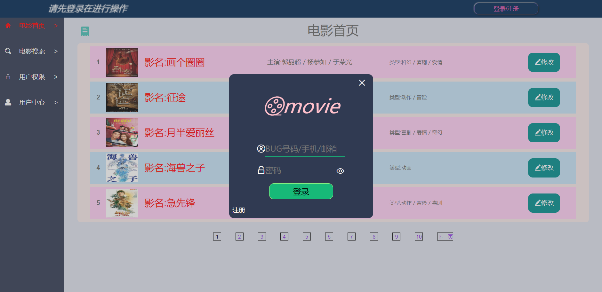
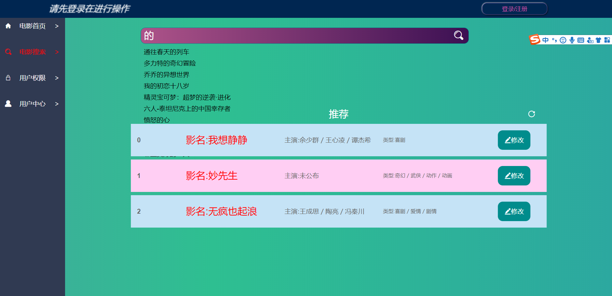
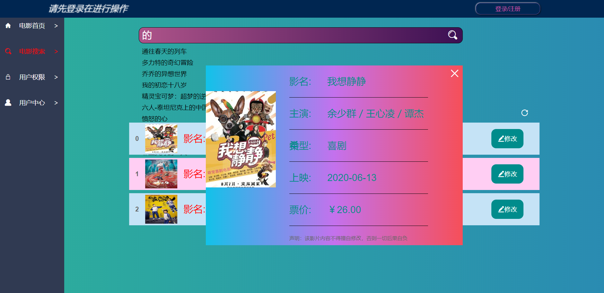